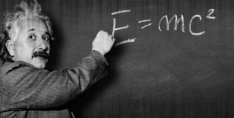

Albert Einstein
Physicien allemand, Albert Einstein jouit d'une renommée internationale

Sa célèbre formule E=mc²
- 1879- il est né le à Ulm, dans le Wurtemberg (Empire allemand)
- 1896-Il fut successivement allemand
- 1901-il publie son premier article scientifique dans les Annalen der Physik, et cet article est consacré à ses recherches sur la capillarité
- 1905-Il publie sa théorie de la relativité restreinte
- 1909-il devient la même année professeur associé à l'université de Zurich7
- 1911-il devient professeur à l'université allemande de Prague7
- 1914-il déménage en Allemagne et habite à Berlin de nombreuses années
- 1921-Il contribue largement au développement de la mécanique quantique et de la cosmologie, et reçoit le prix Nobel de physique
- 1923-il reçoit son prix et prononce sa conférence Nobel à Göteborg
- 1925-il est lauréat de la médaille Copley
- 1928-il est nommé président de la Ligue allemande des droits de l'homme
- 1928-Il participe au premier cours universitaire de Davos, avec de nombreux autres intellectuels français et allemands
- 1935-il devient lauréat de la médaille Franklin
- 1955-il est mort à Princeton, dans le New Jersey
“L’imagination est plus importante que le savoir.” -- Albert Einstein